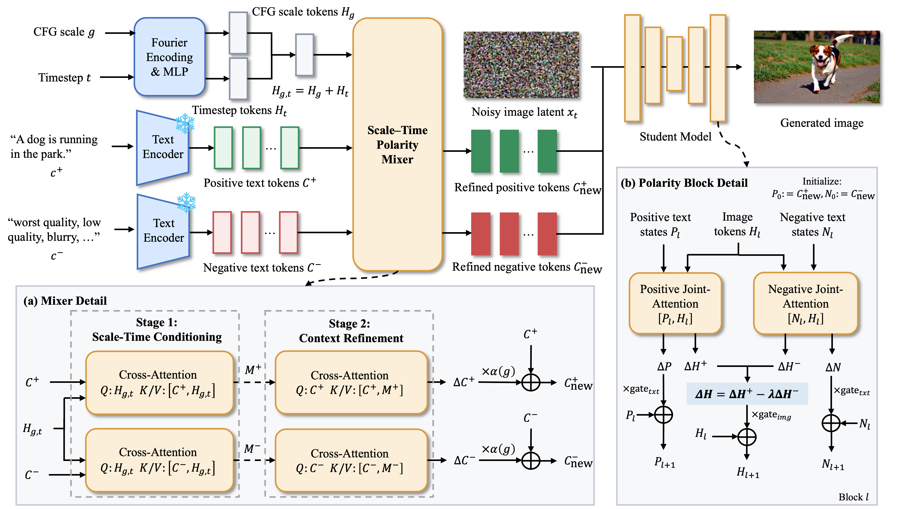
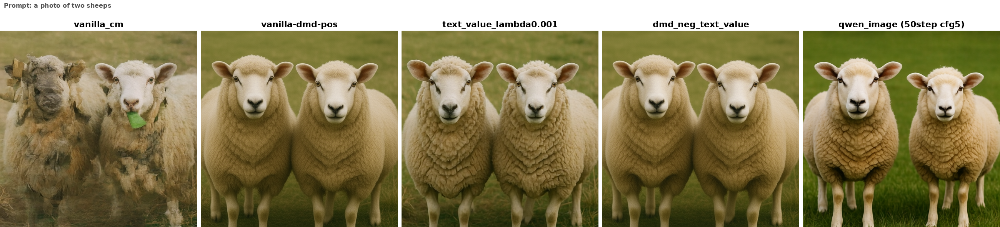
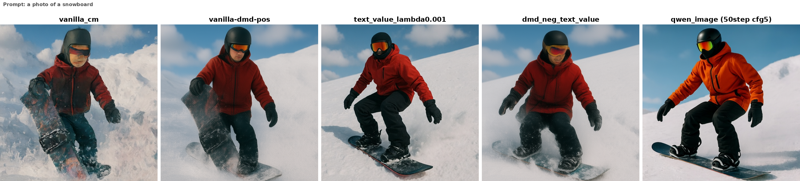
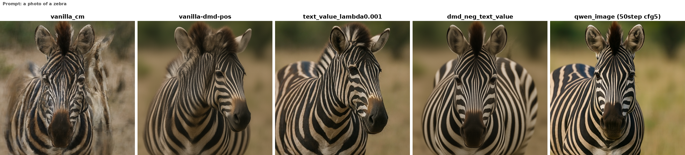
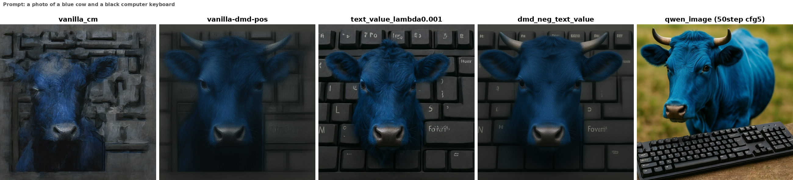
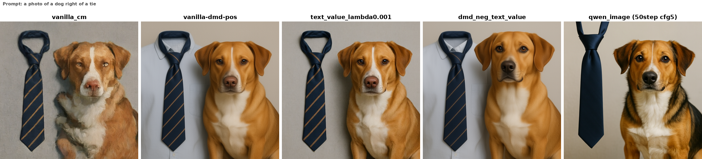
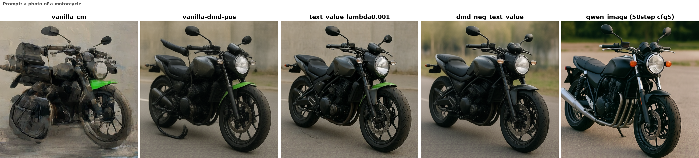
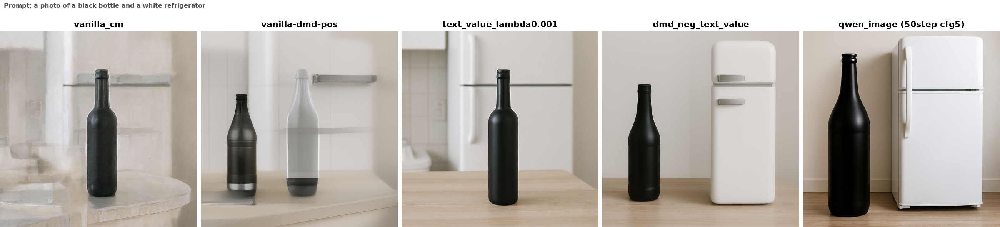
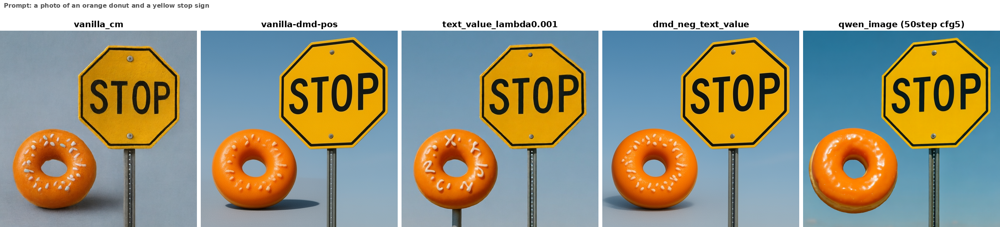
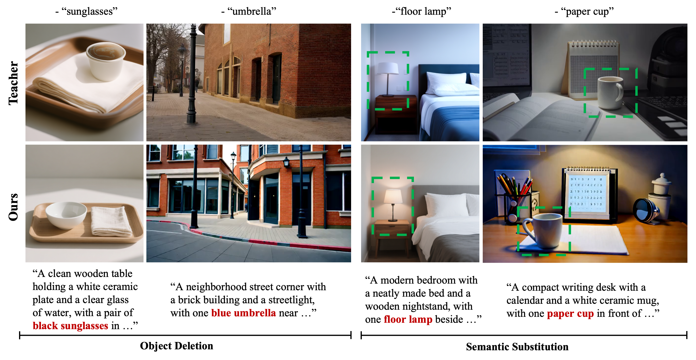

Abstract
Few-step distillation reduces sampling cost but can weaken adjustable classifier-free guidance (CFG) and runtime negative prompting. PP-CFG keeps positive and negative text conditions separate, then combines their attention responses with opposite signs in one shared visual stream. Its Scale-Time Polarity Mixer adapts each condition to the CFG scale and denoising time. The student retains runtime CFG and negative-prompt inputs with one visual backbone pass per step. We evaluate DMD-distilled PP-CFG on Wan2.1 video and both LCM- and DMD-distilled variants on Qwen-Image. PP-CFG reaches 81.46 VBench Total in four steps, reduces teacher-student video distances relative to step-distilled DMD, and improves target removal over the corresponding teachers on NegElement-1K.
Method

PP-CFG keeps positive and negative text conditions separate. The Scale-Time Polarity Mixer refines both using CFG scale and denoising time; Polarity Blocks combine their attention responses with opposite signs in one shared visual stream. This retains runtime negative prompting and adjustable CFG with one visual backbone pass per step.
ΔH = ΔH+ − λΔH−
Generation Quality
Video · Wan2.1-T2V-1.3B
Video examples
Prompt: A colossal red dragon with iridescent scales perches on a jagged mountain peak. It spreads its massive wings and roars, breathing a stream of fire into the sky. Smoke billows around it. The camera circles around the dragon (orbital shot) to show the vast landscape below. 8k resolution, highly detailed.
Prompt: A giant mechanical hummingbird hovers above a field of blooming sunflowers, its brass wings beating rapidly and reflecting the warm afternoon sunlight. Tiny gears rotate beneath its translucent metal feathers as golden pollen swirls through the air. The camera performs a slow orbital shot around the hummingbird. Steampunk fantasy, cinematic, highly detailed, 8k resolution.
Prompt: A solitary lighthouse stands on a narrow cliff during a violent midnight storm. Enormous ocean waves crash against the rocks, sending white spray high into the air, while the lighthouse beam sweeps through heavy rain and fog. The camera rises from the turbulent water toward the top of the lighthouse in a dramatic crane shot. Photorealistic, cinematic lighting, 8k resolution.
Prompt: A colossal stone golem awakens inside an overgrown temple ruin. Moss and vines fall from its shoulders as its glowing amber eyes open and massive stone fingers press against the ancient floor. Sunbeams penetrate the broken ceiling, illuminating clouds of dust. The camera slowly pulls back to reveal the golem's full scale. Epic fantasy, highly detailed, 8k resolution.
Prompt: A futuristic motorcycle speeds across a mirror-like salt desert at sunset. Its glowing wheels leave trails of blue light while distant thunderclouds reflect perfectly on the wet ground. The rider leans sharply into a turn, spraying water outward in a wide arc. The camera chases from behind at low altitude in a fast tracking shot. Cinematic science fiction, photorealistic, 8k resolution.
Prompt: A miniature sailing ship navigates across the surface of a steaming cup of coffee. Foam waves crash against its wooden hull while giant sugar crystals rise like icy mountains in the background. The camera begins with an extreme macro close-up and slowly orbits around the ship. Whimsical surrealism, shallow depth of field, highly detailed, 8k resolution.
PP-CFG reaches 81.46 VBench Total in four steps (DMD: 80.66; AVD: 81.35; teacher: 80.13). DMD leads VBench Quality at 85.55, while ASD leads Semantic at 79.92.
Image · Qwen-Image
Image examples

Prompt: a photo of two sheeps

Prompt: a photo of a snowboard

Prompt: a photo of a zebra

Prompt: a photo of a blue cow and a black computer keyboard

Prompt: a photo of a dog right of a tie

Prompt: a photo of a motorcycle

Prompt: a photo of a black bottle and a white refrigerator

Prompt: a photo of an orange donut and a yellow stop sign
At eight steps, PP-CFG-LCM scores 82.39 GenEval and 87.05 DPG-Bench, the highest among listed students. PP-CFG-DMD scores 80.22 and 86.98; the teacher remains higher on both metrics.
CFG Adjustability
Each row fixes CFG; columns show the Wan2.1 teacher, step-distilled DMD with external CFG, and PP-CFG.
CFG = 1
CFG = 3
CFG = 5
CFG = 7
CFG = 9
At CFG 3 and 7, PP-CFG's VideoMAE FVD to the teacher is 276 and 373, versus 387 and 605 for DMD (lower is closer).
Negative-Prompt Control
NegElement-1K tests 1,000 matched image and video cases across ten categories. Qwen3.5-VL judges target absence; failed or invalid judgments count as failures.

Image · Qwen-Image
At CFG 4, PP-CFG removes the target in 12.08% of image samples, compared with 7.35% for the 8-step teacher (4,000 samples per model).
Video · Wan2.1
At CFG 4, video removal is 22.00% for PP-CFG (4 steps) and 10.20% for Wan (50 steps; 1,000 samples each), so the comparison is not step-matched.
These rates measure target absence, not preservation, and do not isolate the effect of enabling negative prompts within the same model.